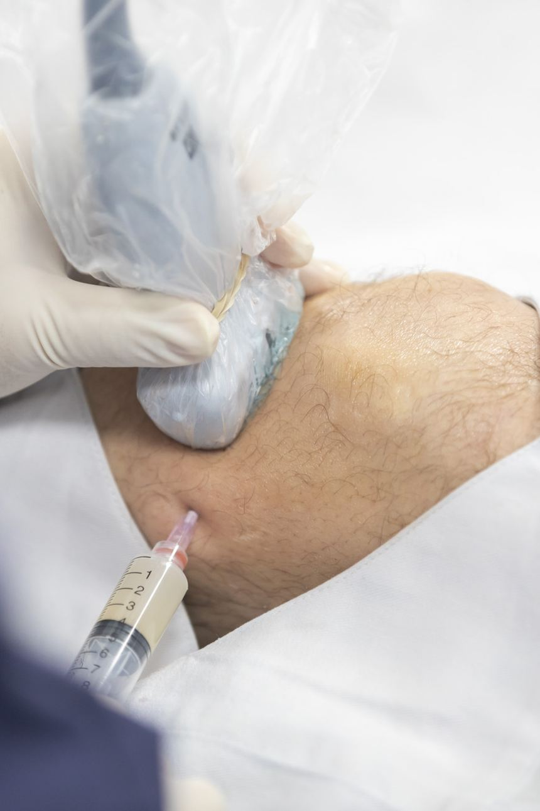
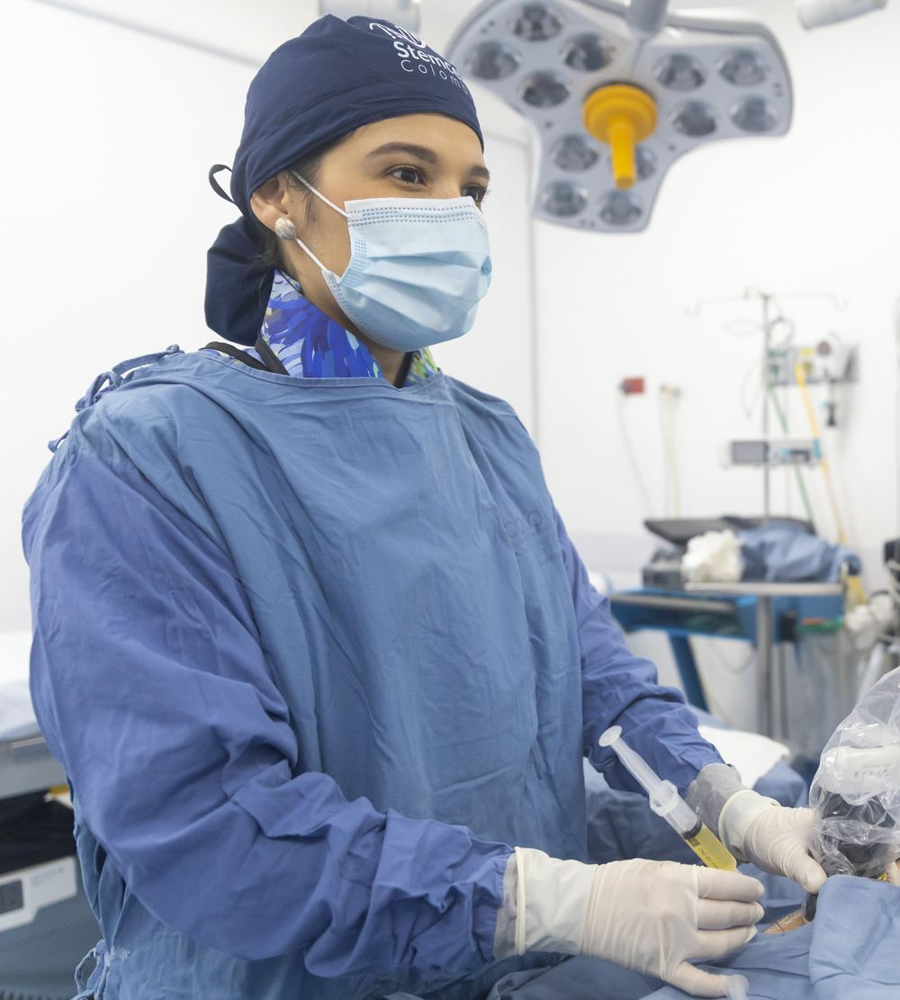
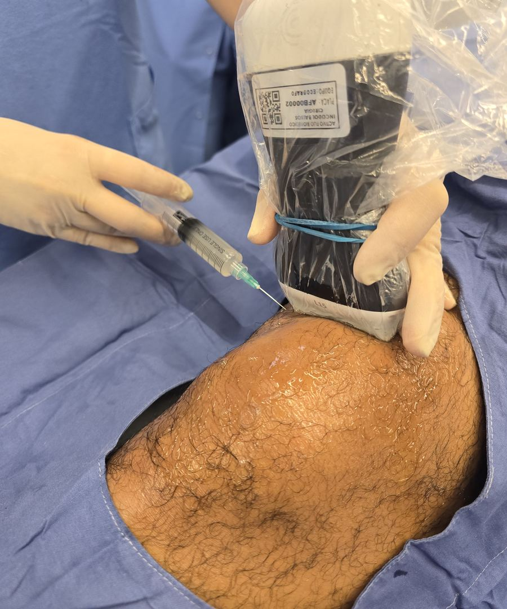
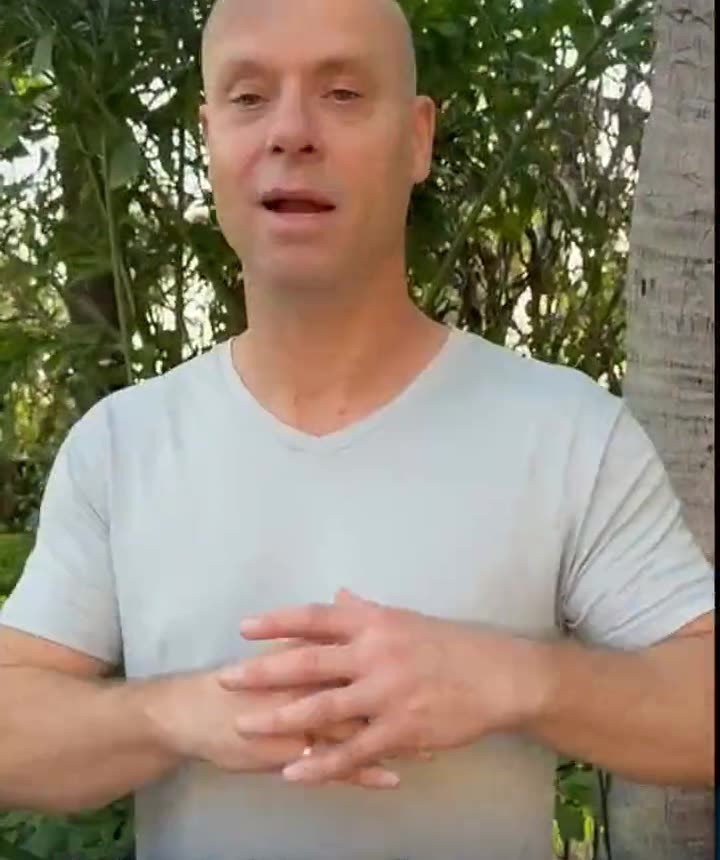
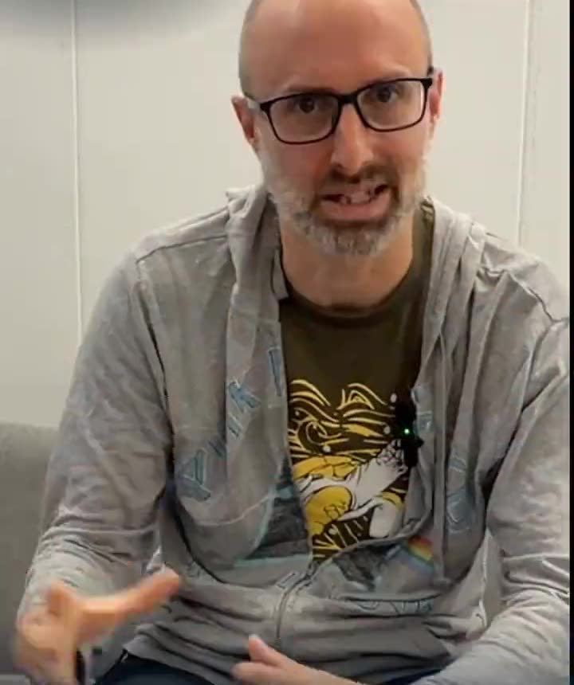
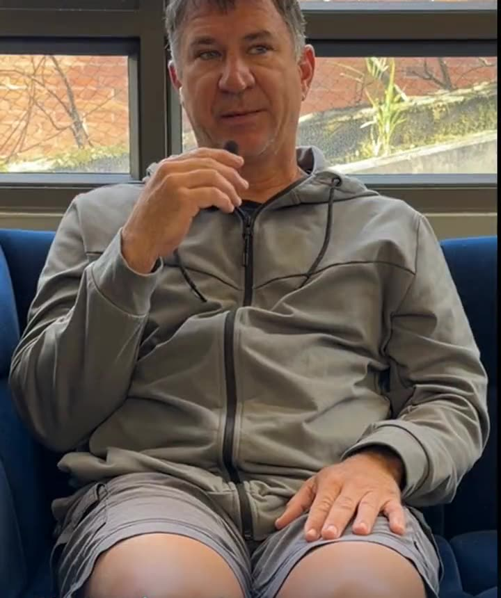
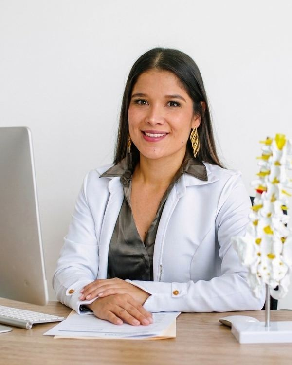
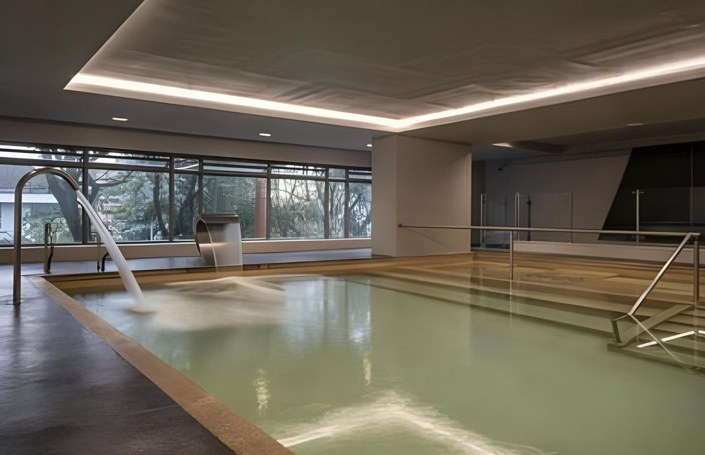

Right now, honestly, I'm at about 90 percent.
Ryan · Eight months afterHealthcare practitioner · Patellar tendon

Fifty million stem cells, placed by a specialist under ultrasound guidance, exactly where your knee is worn. One treatment day in Medellín.
A knee replacement cannot be undone. Before an implant, there may be a step that works with the knee you still have.

Where the cells are placed matters as much as the cells themselves. Every step is designed around that.
A doctor focused on orthopedics reviews your X-ray or MRI with you, before you travel.
Ultrasound lets the specialist see inside the joint while the cells are placed.
Local anesthesia keeps you comfortable. Light sedation is available on request.

Mesenchymal stem cells act through signaling. They release growth factors and cytokines that act on the cartilage, the lining and the bone you already have.
The cells may lower the mediators (IL-1β, TNF-α) that keep the synovium irritated.
Their signals may encourage chondrocytes to produce type II collagen, the substance of cartilage.
The enzymes that dissolve worn cartilage (MMPs) may be quieted.
The lining may produce more hyaluronic acid and lubricin, the joint's own lubricants.
Improvement is gradual, usually between four and six months. Results vary between patients.

"My knee is doing really well. I can go back to running again."
Wes · One year after treatmentKnee treatment in Medellín
Right now, honestly, I'm at about 90 percent.
Ryan · Eight months afterHealthcare practitioner · Patellar tendon

My knee would give out, swell up like a baseball.
Avi · On treatment dayCharlotte, North Carolina · Knee injury

I was limping around for about three months.
Bryan · On treatment dayFlorida · Knee osteoarthritis
"She explained to me each step of the procedure… For anyone who is considering surgery, please give this treatment a try."
D. T. · Both knees · Google review
"The facility and staff were very friendly and caring. Everything was detailed and handed to you in English."
Paulette H. · Google review
Real patients, individual experiences. Results vary between patients.

More than fifteen years of experience. Performs the ultrasound-guided application: placing treatments with precision is her daily work.

More than 5,000 interventional procedures, and associate professor of anesthesia and pain medicine.
A bilingual coordinator is with you from your first message to your flight home.

Where every knee application is performed.

Rest one elevator away from your treatment.

The doctors recommend about three days in Colombia before flying home.
No two knees are the same. After your consultation you receive your plan and its price in writing, before you commit to anything.
Most people with knee arthritis, cartilage wear or a meniscus tear can be evaluated. The doctor reviews your X-ray or MRI with you in the consultation, at no cost.
The application is done with local anesthesia, so you stay comfortable. Light sedation is available on request.
Improvement builds gradually, usually between four and six months after treatment, and some patients keep improving up to eight months. Results vary.
Yes. Both knees can be treated on the same day, and your written plan shows exactly what is included.
The treatment itself takes one day. The doctors recommend staying about three days in Colombia before flying home.
Stem cell therapy is not approved by the FDA, but in Colombia it is legal. People with active cancer cannot be treated.
Choose a time for a complimentary video consultation with the doctor. Have your X-ray or MRI at hand if you have one.
Prefer to write first?